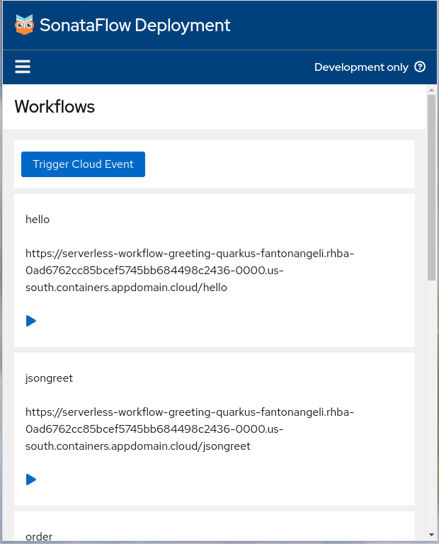

New web app for SonataFlow deployments
The Serverless Logic Web Tools has the deploy on OpenShift functionality to deploy your Serverless Workflows. After you deploy a Serverless Workflow it’s possible to execute them through normal POST requests.
Since the KIE Tools 0.32.0, you can use the SonataFlow Deployment web app, to easily run your workflows directly from your deployment.
It provides a simple and user-friendly interface for viewing and starting workflows, generating custom forms and triggering cloud events.
Requirements
- An OpenShift instance where to deploy your workflows. If you don’t have you can try it using the Developer Sandbox here
View and start a workflow in the deployment
The home page displays the list of all workflows inside the deployment. From the list you can also start a workflow by clicking the play button and a JSON editor will be shown to input your workflow data. After you start a workflow, the app will show the server’s response to see the output of the workflow and troubleshoot any errors.
The video below shows the full process of deploying a workflow on OpenShift from Serverless Logic Web Tools.
As a first step, we use the Greeting workflow from the Samples and then deploy it on OpenShift.
The video shows a new application has been created in the OpenShift cluster.
In the last part of the video, we access the deployment to see the home page of SonataFlow Deployment.
Show a custom form generated from a JSON schema
In the Serverless Workflow specification there is the possibility to use a defined JSON schema to validate the input data before starting the workflow.
If the dataInputSchema property is defined in your workflow, the web app will generate a custom form which you can use to provide the required input data and validate it before triggering the workflow.
The second video in this article shows a custom Quarkus app deployment in an OpenShift cluster.
In the first part of the video we are running the service workflow and this time, we will see an automatically generated form to input our data.
Read more: Input and Output schema definition for SonataFlow
Triggering a Cloud Event
The SonataFlow Deployment Web App allows you to trigger cloud events to which your workflow will listen.
To trigger an event you can simply click on the Trigger Cloud Event button, and then a form will be shown with the possibility of setting the endpoint, the method, the event type, the source, the instance id, the event data, and also set as many custom headers you want.
The second video also presents the event-triggering process.
Installing the SonataFlow Deployment web app as a webjar
For manual installation in your Quarkus app, SonataFlow Deployment web app can be easily integrated as a webjar from webjars.org. Following the steps below:
- Visit webjars.org and search for the latest available version of sonataflow-deployment-webapp
- Edit the pom.xml file and add the following plugin configuration:
Add the sonataflow-deployment-webapp version from webjars.org to the properties section of your pom.xml, replacing the value with the one from the previous step.
<sonataFlowDeploymentWebapp.version>0.32.0</sonataFlowDeploymentWebapp.version>- Add the webjar as a dependency in the dependencies section:
<dependencies>
<dependency>
<groupId>org.webjars.npm</groupId>
<artifactId>sonataflow-deployment-webapp</artifactId>
<version>${sonataFlowDeploymentWebapp.version}</version>
</dependency>
</dependencies>- Add a plugin to unpack and copy the Webjar in the plugins section
<build>
<plugins>
<plugin>
<groupId>org.apache.maven.plugins</groupId>
<artifactId>maven-dependency-plugin</artifactId>
<executions>
<execution>
<id>unpack-sonataflow-deployment-webapp</id>
<phase>process-resources</phase>
<goals>
<goal>unpack</goal>
</goals>
<configuration>
<artifactItems>
<artifactItem>
<groupId>org.webjars.npm</groupId>
<artifactId>sonataflow-deployment-webapp</artifactId>
<version>${sonataFlowDeploymentWebapp.version}</version>
<outputDirectory>${project.build.directory}/sonataflow-deployment-webapp</outputDirectory>
</artifactItem>
</artifactItems>
<overWriteReleases>false</overWriteReleases>
<overWriteSnapshots>true</overWriteSnapshots>
</configuration>
</execution>
</executions>
</plugin>
<plugin>
<artifactId>maven-resources-plugin</artifactId>
<executions>
<execution>
<id>copy-sonataflow-deployment-webapp-resources</id>
<phase>process-resources</phase>
<goals>
<goal>copy-resources</goal>
</goals>
<configuration>
<outputDirectory>${project.basedir}/src/main/resources/META-INF/resources</outputDirectory>
<overwrite>true</overwrite>
<resources>
<resource>
<directory
>${project.build.directory}/sonataflow-deployment-webapp/META-INF/resources/webjars/sonataflow-deployment-webapp/${sonataFlowDeploymentWebapp.version}/dist</directory>
<includes>**/*</includes>
</resource>
</resources>
</configuration>
</execution>
</executions>
</plugin>
</plugins>
</build>This configuration will add the necessary dependencies, unpack the webjar, and copy the required resources.
- Start your app:
$mvn clean quarkus:devOnce these steps are completed, you’ll have integrated SonataFlow Deployment web app into your project, and see the app as the home page of your Quarkus app.
Manual installation of the SonataFlow Deployment web app as a webjar is a good option if you want to have more control over the deployment of the web app or you want to try your workflows locally.
You will also be able to deploy your app to OpenShift following the usual configuration.
An example of a SonataFlow Deployment to use locally it’s available in this repository:
https://github.com/fantonangeli/sonataflow-deployment-webapp-consumer
Read more: Creating a Quarkus Workflow Project
Customizations of the web app
The web app supports a few customizations through the json located in src/main/resources/META-INF/resources/sonataflow-deployment-webapp-data.json, where you can specify the following fields:
- appName: The name of the web app, which will be displayed in the top header.
- showDisclaimer: Whether or not to display the disclaimer, in the top right, informing the user that this is a development purpose deployment.
OpenAPI Specification download
The application gives you also the possibility to let you download the openapi.json file and let you use it for generating client libraries or in your SwaggerUI, for instance.
Responsive Design
The web app has a responsive design to support a variety of devices, including desktops, laptops, tablets, and smartphones.
